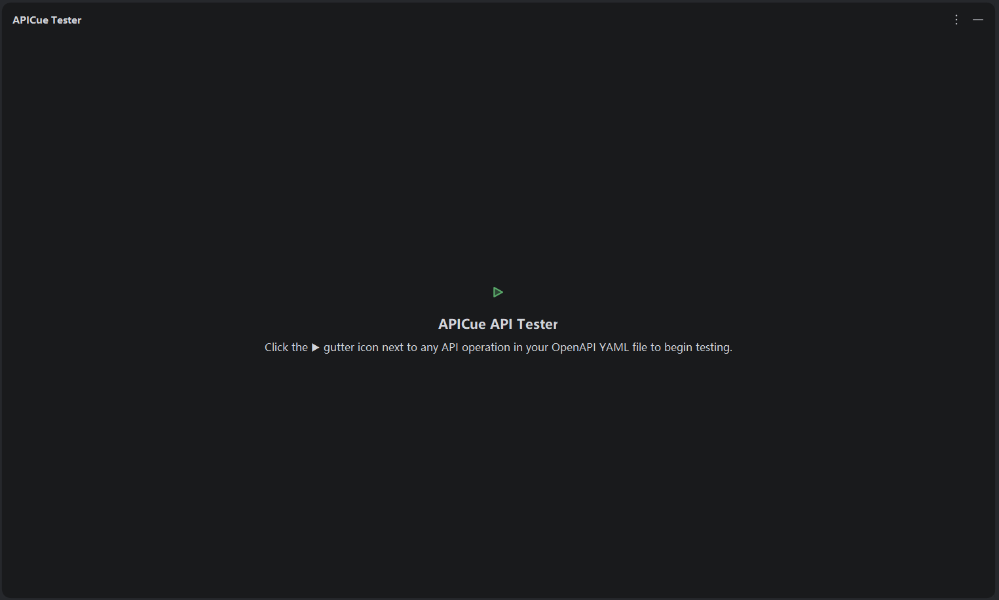
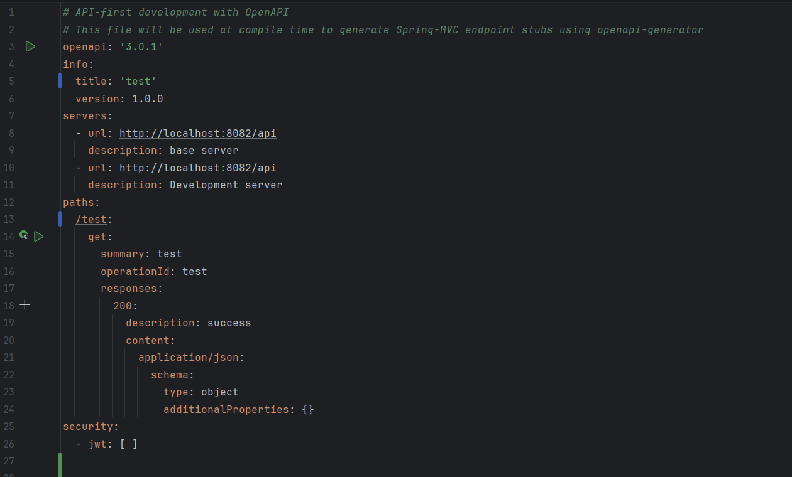
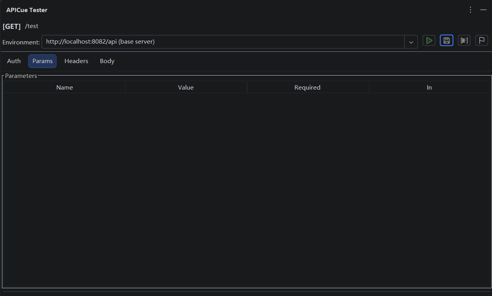
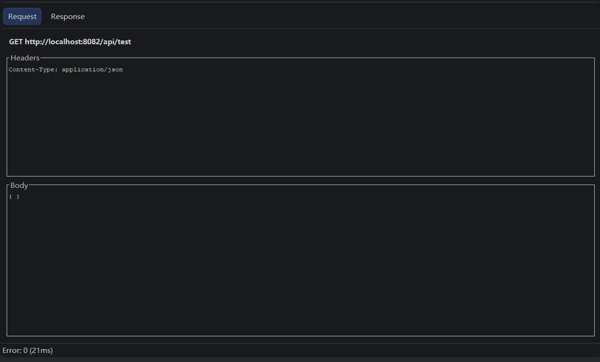

No more switching to Postman or maintaining .http files. Green run buttons appear next to every API operation in your YAML editor — click, review, send.




APICue brings Postman-class API testing into your IntelliJ IDEA — tightly coupled with your OpenAPI specifications.
Green ▶ buttons appear next to every get:, post:, put:, delete:, and patch: operation. Click to open the test panel instantly.
Right-side panel shows the full testing interface: environment selector, auth config, request editor (Params / Headers / Body), and split-pane response viewer.
Reads securitySchemes and security from your spec, auto-generates Bearer JWT, Basic Auth, and API Key headers. No manual setup.
Switch between multiple servers per YAML file. Last-selected URL is remembered per-file across IDE restarts.
Query params, headers, and body auto-filled from example, default, and schema property values following a well-defined priority hierarchy.
Save working request/response payloads back to the YAML as OpenAPI examples. Load them later for reproducible testing and regression checks.
Manage JWT, API Keys per environment with a built-in Token Manager. Tokens stored securely using your IDE's password-safe mechanism.
Export your OpenAPI spec as Markdown or HTML documentation — directly from the tool window toolbar or right-click YAML file. Includes search/filter dialog, configurable content sections, and table-of-contents.
Fully resolves $ref across YAML files (e.g. $ref: 'model.yml#/…') with caching and circular-reference detection.
Supports EN, 中文, 日本語, 한국어, Español, Português, Deutsch, Français, Русский, Tiếng Việt, Türkçe. Automatically matches your IDE's language setting. Perfect for global teams.
No configuration files, no external tools — just your OpenAPI YAML and APICue.
Any .yaml or .yml file with valid OpenAPI 3.0 syntax. APICue parses it on the fly.
Green ▶ buttons appear next to every API operation. Click one — the APICue Tester tool window opens instantly.
Select your target server, review auto-filled params/headers/body, configure auth tokens. Everything is pre-filled from your spec.
Click Send Request. Inspect the response with syntax highlighting, timing, and status code — all inside the IDE.
Built for IntelliJ IDEA with zero external runtime dependencies.
com.anreen.apicueAll dependencies are bundled — no separate installation needed.
Try it free for 30 days. No credit card required.
Everything you need to know about APICue.
.http files that duplicate your API spec. APICue reads your OpenAPI YAML directly — no duplication, no drift. It auto-discovers auth schemes, pre-fills parameters from examples, and lets you save responses back to the spec.Stop switching between your IDE and Postman. Test, iterate, and document — all from your OpenAPI YAML files.
Install APICue Free